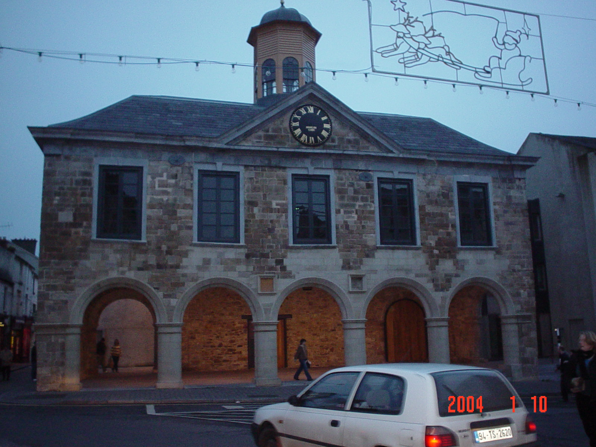

Structures and Buildings
Clonmel's Main Guard (pictured below) is one of the town's major landmarks. Built in 1674 as a palatine Courthouse for the Duke of Ormonde, it later served as a hostel and a barracks before being converted into shops in the 1800's. The building was saved from dereliction following an eight year restoration programme and was re-opened to the public in 2003.

 Home
Home
Situated at the west end of O'Connell St. is the West Gate (below) which was built in circa 1831. Recently Clonmel's citizens organised it's restoration and a limestone plaque commemorating Clonmel born author Lawrence Sterne was installed on the East face of the building by sculptor Frances Dietrich.
Home